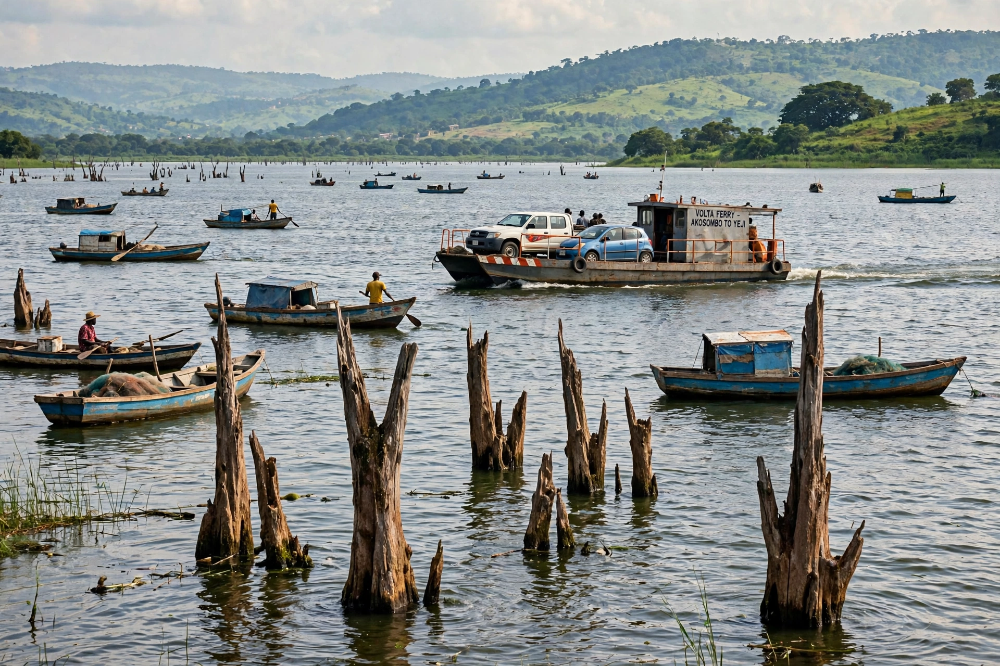

[Image placeholder: Lake Volta, one of the world's largest artificial lakes]The **Lake Volta (Volta Lake)** in Ghana is one of the largest artificial lakes in the world by surface area — about 8,500 km², covering roughly 3.6% of Ghana's land — created by damming the Volta River at Akosombo in 1965. By volume it ranks among the largest reservoirs on Earth. The Akosombo Dam's hydroelectric plant long supplied most of Ghana's electricity and exports power to neighbouring countries.
The lake displaced about 80,000 people and hundreds of settlements when it filled, and it transformed fishing, transport and disease patterns in the region (including bilharzia around its shores). Ferries link towns cut off by the water, though overloading accidents, such as the 2009 and later sinkings, have killed many passengers. The lake is fed by the Black Volta, White Volta and Oti rivers and drains through the gorge at Akosombo to the Gulf of Guinea.
The Volta River Project was championed by Kwame Nkrumah as the engine of Ghana's industrialisation — powering the VALCO aluminium smelter at Tema — with financing from the World Bank, the US and the UK. In drought years (1982–84, 1998, 2006–07) low lake levels caused national power crises ('dumsor' in later years, in part from other shortages).